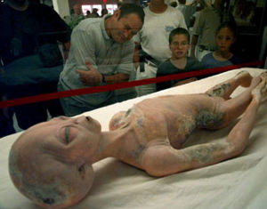

Grises
 De: La Frikipedia, la enciclopedia extremadamente seria.
De: La Frikipedia, la enciclopedia extremadamente seria.
Los Grises son la tipología de extraterrestres mas famosa de toda la historia de la ufología, la humanidad, y la vida real, pero la menos famosa en la ciencia ficción ya que no aparecen en casi ninguna de las películas de Hollywood porque ahí siempre salen otros tipos de aliens que se los inventaron los guionistas de Gringolandia.
Definición y Descripción
Los Grises son una raza extraterrestre del tipo 1 subtipo A originarios de "se, te-revientael-culi" también conocido como Zeta-Reticuli, una estrella binaria en la constelación de Reticulum situada a 39,5 años luz de la Tierra. Estos alienígenas son de morfología humanoide, de baja estatura, cabeza grande, ojos grandes negros y almendrados, sin nariz (solo unas fosas nasales), extremidades largas y delgadas y llamados de esta forma por su color gris característico. Al principio se creía que esta morfología se debía a una anemia severa causada a su vez por una desnutrición por los viajes espaciales extremos, sin paradas para comprar víveres o ir al baño (y la falta de nariz por el abuso de la cocaína), pero gracias a las investigaciones del ufólogo Joseph "Alien" Hynek conocemos la verdadera descripción física de éstos seres extraterrestres:
- Miden aproximadamente entre 90 y 150 cm de altura, lo que significa que son malísimos para jugar al basketball.
- Su piel es color gris, lo que supone que provienen de un argiria crónica a causa de algun medicamente contra el acné que ingirieron cuando eran adolescentes.
- Sus cabezas son grandes, de hecho éste es su rasgo mas característico, obviamente porque su inteligentes, tienen poderes psíquicos, y obviamente son ateos, ya que no creen en las chorradas que creen los organismos de mentes inferiores.
- Sus ojos son grandes, alargados, y de color negro oscuro, otro rasgo distintivo que junto a la forma de su calva cabeza y el color de su piel es lo que mas los identifica como tales. El que sus ojos sean grandes y negros nos dice que sus pupilas estan hyper dilatadas
a causa del porro y que necesitan tener esos "faros" para ver en la oscuridad, lo que confirma aquello de que su planeta es oscuro y por ende está bañado por una luz solar muy tenue y/o viven en penumbra permanente (eso pasa por no pagar la factura de la luz). Por otro lado, que sus ojos sean ovalados indica que comparten el mismo fenotipo que los asiáticos, lo que es obvio ya que como dijimos son seres sumamente inteligentes, y como sabemos los asiáticos son los mas listos (contrario a los gringos que son los mas idiotas).
- Sus brazos y piernas son largos y delgados, con la característica de que la articulación del brazo comienza mas arriba que en los humanos, dando como resultado unos bíceps mas cortos y unos antebrazos mas largos, obviamente para alcanzar el tablero de control de la consola
Megadrive de mando de la nave espacial, ya que como son unos enanos no podrían llegar a la consola de la nave si sus brazos no se elongaran lo suficiente.
- Tienen solo cuatro dedos en las manos (un pulgar oponible a los otros tres), y son mas largos que en el humano promedio, lo que indica que no pueden masturbarse pero sí pueden hacerte el tacto rectal con total facilidad (eso explica muchas cosas sobre las abducciones alienígenas). Los dedos de sus pies están mas atrofiados que en los humanos, al punto tal de que son casi inexistentes.
- Aparentemente no tienen órganos genitales, por lo que son asexuales. Obviamente se reproducen asexualmente, posiblemente mediante partenogénesis al escupir un huevo por la boca, del cual luego nace un vástago donde éste retoño es obviamente idéntico a su progenitor... ha no, espera, esos son los alienígenas del planeta Namek, pero bueno, quizá Los Grises también hagan eso, y si no seguro se reproducen por clonación, lo que explica por que los especimenes de Los Grises son todos idénticos (otra característica que comparten con los chinos).
- Según dicen, tienen un sistema digestivo incompleto, lo que significa que no poseen un sistema excretor ya que dada su alta tecnología han creado cápsulas de suplementos dietarios 100% completos y eficientes con 0% de excipientes inocuos y/o radicales libres que deban deshecharse, lo que explica el tamaño de su pequeña boca y presume ausencia de dentadura ya que no necesitan comida y solo se nutren al ingerir
floripondios una cápsula diaria que ya contiene todos los nutrientes necesarios y no producen desecho alguno que el organismo deba excretar, donde como vemos cápsulas como éstas son ideales para los viajes interestelares (o sea, no cagan ¬¬).
- Su piel, pese a su color gris, posee una peculiar bioluminiscencia verdosa solo visible en la oscuridad, presumiblemente siendo un modo por el cual los especímenes pueden verse a simple vista cuando están en la oscuridad de la superficie de su planeta. Debido a ésto muchos nerds y "lokitos" de la mas variada índole han creído erróneamente durante años que los marcianos son verdes, cuando en realidad no son verdes ya que son grises y solo su bioluminiscencia es de un tono verde-mate, y no son marcianos sino mas bien zetareticulianos, pero sí son marxianos ya que son comunistas.
- Sí, son comunistas, ya que sus enormes y evolucionados cerebros llegaron a una etapa donde la banalidad y lo superficial de la sociedad capitalista de los humanos es vista como algo prehistórico y antievolutivo, y dada su avanzada y compleja red neuronal los Grises mantienen constante intercambio sináptico entre todos sus especimenes a través de la telepatía, por lo que han evolucionado al punto tal de desarrollar una gran empatía entre todos los individuos de su especie llegando a actuar en coordinación y cooperación como un único ser, lo que ha suprimido su individualidad para reemplazarla por una conciencia colectiva común, lo que explica aquello que se dice que los Grises son todos iguales, actúan de manera colectivista, y son fríos y calculadores, habiendo organizado su sociedad en total neutralidad, sin división de clases, sin diferencias étnicas, sin religiones, sin distintos sexos, y sin diferentes naciones, todos unidos como una sola especie unida en conjunto donde las masas de alienígenos grises evolucionaron superando los desequilibrios y diferencias de las especies inferiores, y dada su homogeniedad total se han lanzado en su conjunto a la conquista del espacio, cosa que los humanos no pueden hacer porque siguen matándose los unos a los otros y dividiéndose en sistemas de castas y segregacion por trivialidades artificiales que les impiden evolucionar como Los Grises, que han llegado a ser los seres mas evolucionados de todo el universo.
Grises VS Reptilianos
Estos no son grises ni reptilianos, simplemente son
marcianos^^.
Los plusvalor de los líderes (como Xemu, Bush, Bill Gates, y Rupert Murdoch) mientras los Grises intentan darnos pistas de su existencia dejando círculos en los cultivos y abduciendo gente a las que les meten sondas por el culo y les implantan microchips, para tratar de ver si con eso la raza humana alguna vez despierta de su letargo y marcha por el camino del socialismo como han hecho los Grises, para liberarse de una vez por todas.
Los Grises y la humanidad
Se dice que lo los humanos y los grises están emparentados desde el momento en que los humanos fueron creados. Las historias sumerias cuentan que la raza humana es una mezcla de Sumeria a los Grises les dieron el nombre de Igigi, y pasaron a formar parte del panteón de deidades con nombres cool junto a los Annunaki, los Kachinas, Krishna, Roswell para matar a su tripulación de Grises, donde tres de ellos murieron y uno sobrevivió y fue llevado al Area 51 para darle a conocer el antiguo arte de la brutalidad policíaca e interrogarlo para que revelara los planos secretos de la nave que les permitiera a los drones que usan para espiar a abducción, con la cual llevan a un humano a su nave, le hacen una colonoscopía, le implantan un microchip, le toman muestras de ADN, y lo usan para reproducir especímenes híbridos mitad humano mitad gris, tales como Sheldon Cooper, con la esperanza de crear una nueva especie de mutantes que permita llevar a la humanidad hacia la siguiente fase de la cadena evolutiva.
Híbridos de Humanos y Grises
Bob Lazar y los Grises
Robert "Bob" Lazar, es la fuente de la mayor parte de la alucinación información de los grises que tenemos ya que trabajo en el Area 51, y convivió todos los días con los grises (incluso les robaba el almuerzo y les quitaba el dinero, ya que eran mas nerds que el). Cosa que a pesar de que no puede demostrar, todos estamos seguros que es cierto, así como su titulo universitario y todo su currículum el cual fue borrado por los Hombres de Negro, quienes se abstuvieron de borrarlo a él también porque ya se había convertido en una figura publica, al publicar información confidencial que había jurado jamas revelar (motivo por el cual lo querían matar en primer lugar).
La información que le debemos es: El planeta de origen de los grises llamado "se, te-revientael-culi"; Su fuente de energía, una mezcla entre refresco de dieta y el "elemento 115" lo cual no es otra cosa mas que dulces de menta mezclados con Kryptonita.
Los Grises, el salto interdimensional, y su verdadera naturaleza
 Éste mas que salto interdimensional quizo hacer el salto en paracaídas, y parece que no le salió muy bien que digamos...
Es bien sabido que los grises dominan el salto interdimensional. La pregunta que todos nos hacemos es ¿como demonios lo hacen?. Y la respuesta esta en la misma pregunta, algunas religiones claman que los grises son el realidad Alisteir Crowdlay, y que están aquí para hacer que la gente pierda la fe en la religión y de esta manera robarse su alma. Pero esa es la misión de la Wikipedia y de la televisión. Sin embargo, analicemos la alucinacion hipótesis del caso de que fueran realmente espíritus y no seres vivos. Esto explicaría por que pueden alterar el tiempo y el espacio y no ser afectados, y por que pueden atravezar paredes y cambiar la dirección de los platillos voladores bruscamente, sin terminar con la cabeza como un huevo lanzado desde 26 metros de altura. Pero no explican su obsesión con meter sondas por el culo. Esto mas bien da soporte a la idea de que quieren analizar el intelecto humano y no robarse su alma. Pero el ser demonios si explicaría por que andan desnudos. Si fueran de otro planeta llevarían trajes mas o menos como los astronautas a la Luna, (aunque ya sabemos que esto fue un fraude, nos da una idea de como debe ser un traje espacial) y no andarían desnudos por ahí de planeta en planeta ya que a pesar de que no tienen órganos sexuales sí podrían pescar alguna infección pulmonar o algo. Aunque también puede ser que sean tan diferentes que las enfermedades humanas no los afectan, o que en realidad sean androides o una especie de maquina. La conclusión de todo esto es que los grises son en realidad demonio-androides-organicos de otra dimensión. por abreviación DE-DROGAS. Por lo visto, la verdadera naturaleza de los Grises nunca podrá ser conocida por los que consumen drogas (osea Todos, TODOS dije). La pregunta aqui es: Seran los Grises "demonios", "androides", o "humanos" evolucionados que viajaron atrás en el tiempo a visitar a los simios prehistóricos de los cuales provienen? (o sea, nosotros) Seres extraterrestres, provenientes de los confines mas recónditos del universo que nos vienen a enseñar la única, incómoda y aterradora verdad? O simplemente el mismo consumo de drogas nos hace pensar eso y realmente "no existen". O si igual y si existen pero en el mismo plano que la democracia y igualdad social y el respeto al derecho ajeno.
Autor(es):
- Fordus
- Mad Max
- Ivanmonterrey
- WR30M
Frikipedia 2005-2016, Licencia
GFDL 1.2 - Extraído por FrikiLeaks